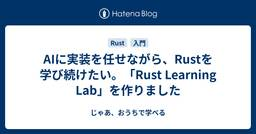
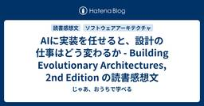
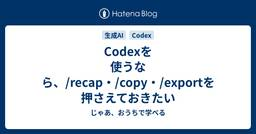
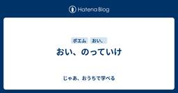
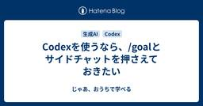
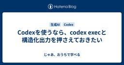

じゃあ、おうちで学べる
https://syu-m-5151.hatenablog.com/
本能を呼び覚ますこのコードに、君は抗えるか
フィード

AIに実装を任せながら、Rustを学び続けたい。「Rust Learning Lab」を作りました 113
113
じゃあ、おうちで学べる
はじめに Rust Learning Labは、手元のRustコードを題材に、構文や型、所有権を説明してもらうためのCodex・Claude Code向けプラグインです。「この記号は何か」「なぜここで借用するのか」「この変更で何が変わるのか」といった疑問を、具体的なコードに沿って確かめられます。 github.com Rustを書き始めた人にも、コードは読めるけれど型や所有権を選んだ理由までは説明しきれない人にも使ってもらいたいと思っています。私が考えているのは、AIに何を任せ、何を自分で確かめるか、その判断を育てる機会を仕事の中にどう残すかということです。Rust Learning Labは…
2日前

AIに実装を任せると、設計の仕事はどう変わるか - Building Evolutionary Architectures, 2nd Edition の読書感想文 41
じゃあ、おうちで学べる
はじめに 『Building Evolutionary Architectures, 2nd Edition』を読みました。要件や技術が変わり続ける中で、システムの設計をどう変えていくかを扱った本です。部品をどう分け、どうつなぎ、どこへデータを置くか。ここでいうアーキテクチャは、そうした全体の構造を指します。1か所を直すだけで済むか、ほかの部品や担当チームまで巻き込むかにも関わります。 中心となるのは、守りたい性質を確かめる「フィットネス関数」です。新しい機能が動くだけでなく、応答が遅くなっていないか、必要なセキュリティを保てているかも、日々の変更の中で確かめる。本書は、その検査の仕組み、変更…
4日前

Codexを使うなら、/recap・/copy・/exportを押さえておきたい 141
じゃあ、おうちで学べる
はじめに Codex CLIには、会話を要約する /recap、出力をコピーする /copy、会話全体を書き出す /export があります。いずれも会話に蓄積された情報を扱う機能ですが、対象と用途が異なります。 この記事では、3つのコマンドの役割と、関連する /compact・/status・/diff との違いを整理します。要約、コピー、保存で何が得られるのか。現在のコードや検証結果は、どこで確かめるのか。この区別を押さえると、作業の再開やPRの説明に必要な情報を選びやすくなります。 会話の要約、出力のコピー、会話全体の保存 3つのコマンドは、扱う情報の範囲で分けられます。 コマンド 扱う…
5日前

おい、のっていけ 38
じゃあ、おうちで学べる
はじめに 誰かの「やってみたい」に加わることは、仕事の中でも外でも、人生を豊かにすると考えています。人の誘いに応じて、自分だけでは選ばなかった場所へ行き、会わなかったはずの人と話す。興味のなかったものを、そこで面白く感じることもある。自分の関心だけで選んでいたら、選ぶものはだんだん似てきます。 それなのに、のる前は面倒です。予定を空け、知らない場所へ行き、慣れない人と話す。楽しめるかは分からないのに、手間は先に見える。今日はやめておこう。次に面白そうなものがあったら。その判断は一度ずつならもっともでも、繰り返していると、自分に何が起きるのでしょうか。 誘いを一度断っても、その日はいつもどおりに…
6日前

Codexを使うなら、/goalとサイドチャットを押さえておきたい 182
じゃあ、おうちで学べる
はじめに Codexが修正している途中で、「なぜ、その判定を変えるのか」と聞きたくなることがあります。理由を知りたいだけなのか、その変更を止めてほしいのか。途中で送る一文にも、別の目的があります。 長い仕事を続ける /goal、途中の質問を分ける /side、実行中の指示変更と予約送信。それぞれ、作業を続ける条件、質問する会話、指示を送るタイミングを指定する操作です。9月のCLI更新では、下書きを残したままCodexからの質問へ答える機能も加わりました。 認証処理を直す仕事で考えてみます。修正は続けてほしい。でも、期限の判定については説明を聞きたい。必要なら仕様を決め直し、Codexへ変更を指…
7日前

Codexを使うなら、codex execと構造化出力を押さえておきたい 4
じゃあ、おうちで学べる
はじめに Codexへ同じ種類の依頼を繰り返していると、会話を開いて文章を貼り付ける操作を省きたくなります。変更概要を作る、ログを整理する、確認すべき点を一覧にする。入力と出力が見えている仕事なら、codex execで既存のCLIの流れへ組み込めます。 JSONの形が正しくても、調査が成功したとは限りません。対象を読めなかった結果が「問題なし」の空配列になれば、後の処理は失敗に気づけません。この記事では、実行中のイベント、最後の回答、実行そのものの失敗を分けて受け取ります。 learn.chatgpt.com まず単発の仕事を渡し、次にJSONLのイベントと最終JSONを分けます。その後、保…
8日前

Codexを使うなら、定期タスクを押さえておきたい
じゃあ、おうちで学べる
はじめに 毎朝、前日に変わったコードを確認したい。レビュー待ちのPRも見に行きたい。繰り返す仕事には、手順が分かっていても、始めるのを忘れる問題があります。Codexの定期タスクを使うと、予定した時刻にその仕事を始められます。 毎朝同じ文章を送っても、前回の会話や対象ファイルがなければ、同じ仕事にはなりません。予定どおり始まっても、必要な情報を読めずに終わることがあります。実行する時刻と一緒に、何を渡して始めるかを決めます。 ここでは、ローカルプロジェクトの変更を朝に確認するタスクを作ります。ChatGPTデスクトップアプリ内のCodexから利用し、管理画面の Scheduled で予定と実行…
9日前
Codexを使うなら、Worktreesと会話の分岐を押さえておきたい
じゃあ、おうちで学べる
はじめに 会話を分岐しただけでは、ファイルは分かれません。修正案を2通り試していても、同じディレクトリを書き換えているなら、片方の変更はもう片方からも見えます。会話の中では別案でも、ディスク上では同じ実装を直している状態です。 Codexでは、会話の分岐にWorktreeを組み合わせ、作業場所も分けられます。共通の調査から別案を試し、それぞれの差分を比較できます。取り込む変更が決まったら、不要になった作業場所も片付けます。 Claude CodeのAgent viewの記事では、並行する仕事の編集場所をWorktreeで分け、最後に変更を統合する話を書きました。今回の主題は、Codexから会話…
10日前
Codexを使うなら、SkillsとPluginsを押さえておきたい
じゃあ、おうちで学べる
はじめに 同じ仕事を頼むたびに、前の会話からうまくいった指示をコピーすることがあります。その手順を残す場所として、Claude Codeの記事ではAgent Skillsを紹介しました。続くPluginsの記事では、社内で共有するSkillをプラグインにまとめる方法を書きました。配布した後も更新が届くところまで管理します。今回はCodexで同じことをするために、Skillを作る基準と、Codex固有の配置・呼び出し方を考えます。 syu-m-5151.hatenablog.com syu-m-5151.hatenablog.com PR説明を頼んだときは使ってほしいけれど、変更方針を相談してい…
11日前
Claude Codeの Plugins は設定したほうがいい
じゃあ、おうちで学べる
はじめに これまで、settings.json、CLAUDE.md、Commands、Hooks、Subagents、Skillsについて書いてきました。それぞれ設定すると、毎回説明することを減らせます。その次に困るのが、直した設定を、使っている環境へ届け続けることです。個人的にPluginsで嬉しいのは、自分のSkillをパッケージとして管理できることです。Skillを配布しても、その後の更新を忘れてしまうので。 たとえば、変更の概要を書くSkillを3つのリポジトリへコピーしたとします。1つで説明を改善したら、残り2つも更新する。Hooksも一緒に渡したいなら、設定ファイルへ追記する場所を…
12日前
Claude Codeの Agent view とセッション間通信は使ったほうがいい
じゃあ、おうちで学べる
はじめに AIを使って仕事が楽になった、という人は定期的に現れます。どこかの偉そうな人から、エージェントに任せれば人は楽になる、と言われる。けれど、複数のエージェントを起動すると、減っているのは考える時間です。 セッションごとの入力待ちに答え、別worktreeの差分を読み、終わった変更を同じ状態で動かす。仕事の量が消えたわけではなく、労働密度が上がっていました。1つのターミナルを見続ける辛さとは、別の辛さがあります。 Agent viewは、この辛さを消す機能ではありません。複数セッションの状態を一覧し、入力を求めている仕事へ移るための機能です。セッション間通信は、決まったことを別のセッショ…
13日前
Codexを使うなら、権限プロファイルとRulesを押さえておきたい
じゃあ、おうちで学べる
はじめに Codexにテストを実行してほしいのに、依存パッケージの取得や書き込みで止まることがあります。そこで権限を広げると、今度はどこまで実行できるのかを説明しにくくなります。確認画面の多さだけを見て設定すると、必要な権限も分かりにくいままです。 権限プロファイルでは、ローカルのコマンドが触れるファイルや通信先をまとめます。Rulesでは、コマンドの引数列から許可・確認・禁止の判断を決めます。Claude Codeの権限設定と比べると、「どの操作を許すか」と「どの範囲なら任せるか」を分けて考える意味が見えてきます。この記事では、その設計の違いを押さえてから、テストが止まった場所と直す設定を順…
14日前
Codexを使うなら、config.tomlとAGENTS.mdを押さえておきたい
じゃあ、おうちで学べる
はじめに Codexで設定を残す場所は、主に2つあります。config.tomlは実行環境を、AGENTS.mdは仕事の進め方を決めます。 learn.chatgpt.com config.tomlにはモデルや推論の強さなど、実行時の条件を書きます。AGENTS.mdには検証方法や作業上の制約を書きます。別のファイルの設定が優先されたり、起動場所によって指示が読み込まれなかったりするため、保存した内容と実際の動作を照合します。 設定の優先順位、起動場所、読み込まれる指示を確認して初めて、同じ条件でCodexを使えます。この記事では、まず2つの役割を分け、次に設定の読み込み順とAGENTS.md…
15日前
Claude Codeの Rules と Auto memory は、書きっぱなしにしないほうがいい
じゃあ、おうちで学べる
はじめに 「今週は検証環境が使えない」と伝えた文が、来月の会話にも残っている。期限のある事情を覚えているだけなのに、いつの間にか恒久的な手順になる。そうなっていたら困ります。覚えてくれることと、今も正しいことは別です。 以前のモデルが何度も間違えたために足した指示も、モデルを替えた後まで同じ書き方で必要とは限りません。消してよいのか、残すべきなのか。その判断をしないまま、設定だけが増えていきます。 昨日の記事では、/skill-doctor でSkillsの使われ方を調べ、モデル更新時に指示を見直す話を書きました。今回は、その続きを .claude/rules/ とAuto memoryで考え…
16日前
Claude Codeの Agent Skills は、ときどき見直したほうがいい
じゃあ、おうちで学べる
はじめに 2025年12月に「Claude Codeの Agent Skills は設定したほうがいい」という記事を書きました。必要な手順を必要なときに読み込ませる仕組みとして、Skillsを紹介した記事です。ただ、後半では設定が増えるほど管理が難しくなる話もしました。どれが使われているのか。似た説明のSkillが、互いの出番を奪っていないか。 syu-m-5151.hatenablog.com 今回は、その続きです。Skillsをいくつも設定した人には、まず /skill-doctor を紹介したいです。設定を増やす前に、今ある設定の使われ方を見られます。 /skill-doctor はv2…
17日前
本を書きました。本だからできたこと、これからできること
じゃあ、おうちで学べる
はじめに 『おい、とりあえず終わらせろ そうすれば「動けない自分」が変わるから』が、ダイヤモンド社から発売されました。 【DL特典付】おい、とりあえず終わらせろ そうすれば「動けない自分」が変わるから（特典：生成AIにおけるSkillとは何か データ配信）作者:nwiizo（ぬうぃぞう）ダイヤモンド社Amazon 初めて商業出版する自分の単著は、技術書になると漠然と思っていました。技術の仕組みや使い方を詳しく書くか、『達人プログラマー』みたいな、プログラマーの判断や仕事の進め方についての本を書く。そういうことに憧れていました。 それが、『おい、とりあえず終わらせろ』になりました。プログラマーに…
19日前
Yaziとは何か。ファイルを探し、確かめ、操作するTUIの仕組み
じゃあ、おうちで学べる
はじめに ディレクトリの中身を一覧にしても、目的のファイルがすぐ分かるとは限りません。似た名前の画像を見比べる、PDFの内容を確かめる、複数の場所からファイルを集める。こうした作業では、名前を検索するだけでなく、中身を見ながら選ぶ画面が役に立ちます。 Yaziは、その画面をターミナルに用意するファイルマネージャーです。Rustで実装され、キーボードを中心にディレクトリ移動、プレビュー、複数選択、コピーや移動を操作できます。文字端末の中で画面を描く、TUIと呼ばれる種類のアプリケーションです。 特徴は画像を表示できることだけではありません。プレビューの準備中にも別のファイルへ移動できるよう、処理…
22日前
fffで探し、CodeDiffで読む。私のNeovim設定とソースで見る仕組み
じゃあ、おうちで学べる
はじめに AIにコードを書いてもらうことが増えて、私はコードを書くより、読む時間のほうが多くなりました。生成された変更を開き、何を直そうとしているのか、そのためにどこを変えたのかを追っています。 そのとき素早くつかみたいのは、変更の構造です。どこから呼ばれ、どのデータを受け渡し、どこで判断し、失敗をどう返すのか。変更された行だけを見ていても、このつながりは分かりません。周辺のコードを行き来しながら、何を変えようとしていて、それがどう実現されているのかを理解したいと思っています。 fffは目的のコードを探すために、CodeDiffは変更されたコードを読むために使います。私の環境では、LazyVi…
25日前
技術力に優劣はない(「技術力に優劣はある(「技術力に優劣はない」を読んで)」を読んで)
じゃあ、おうちで学べる
syu-m-5151.hatenablog.com はじめに 一年で、こんなに価値観が変わるとは思っていませんでした。 私は「技術力に優劣はある」という記事で、技術との向き合い方を「道具として使う」「理解する」「創る」に分け、それぞれの中にも上手下手があると書きました。市場はその差を評価する。学びを続けた人ほど選択肢が広がる。コミュニケーションが得意でも、技術を学ばなくてよい理由にはならない。この主張は今も間違っているとは思いません。 エンジニアのキャリア地図 「技術」と「やりたいこと」から見つける最適解作者:サカモトソシムAmazon その記事を書いた時にも、AIコーディングエージェントはあ…
1ヶ月前
AI時代のソフトウェア要求 - Software Requirements Essentialsの読書感想文
じゃあ、おうちで学べる
はじめに 私たちは、明確なゴールを決めずにコードを書き始めていた。 書いて、動かして、また直した。 AIエージェントを使う今、それは過去の話ではない。 コードから考え始めることには、もっともな理由があります。動くものがあれば話は具体的になり、間違いにも早く気づけます。AIエージェントは、このやり方をさらにやりやすくしました。曖昧な依頼からでも、画面、API、テストまで一息に作れます。 ただし、速くなったのはコードだけではありません。検討中の案、採用した要求、実装条件を区別しないまま、誰かの要望が動くソフトウェアへ変わる速度も上がりました。完成したコードから、「なぜ作るのか」「誰が何を達成するの…
1ヶ月前
Rustで日本語推敲CLI/Skillの「Suiko」を作りました
じゃあ、おうちで学べる
はじめに Suikoは、日本語文書の自然さと読みやすさを、再現可能なルールで診断するRust製のCLIです。禁止語や翻訳調に加え、均一な文のリズム、段落構造、用語の初出、読解負荷まで確認できます。ただし、文章がAIによって書かれたかは判定しません。怪しい箇所を同じ条件で指し示し、直すか残すかの判断を人間やエージェントへ返します。 github.com Suikoの出発点は、cojiさんのNatural Japaneseです。このAgent Skillは、文章を書く前の設計、書くときの制約、書いた後の検査を一体として扱います。定型句を置換するだけで終わらず、機械が疑いを検出し、文脈を読める人間や…
2ヶ月前
RMCP 3.0でtfmcpをMCP 2026-07-28へ移行した
じゃあ、おうちで学べる
はじめに 2025年3月、私はTerraformをMCP経由で操作するツールtfmcpを開発しました。JSON-RPCのメッセージ型、標準入出力のトランスポート層、メソッドの振り分けまで、すべてRustで実装しています。当時の記事では「MCPの動作原理を理解するため、あえて配線を自分の手で組み立てた」と書きました。正直に言えば、当時は利用できるライブラリがなく、自作するほかなかったのです。 syu-m-5151.hatenablog.com それからMCPは何度も更新されました。2026年7月28日版では、プロトコルセッションと初期化ハンドシェイクがなくなりました。代わって、server/di…
2ヶ月前
TopcoatでRustフルスタック開発
じゃあ、おうちで学べる
はじめに Topcoatは、HTMLをサーバーで生成しながら、ブラウザ上の状態更新やサーバー処理もRustで記述するフルスタックフレームワークです。フロントエンド用のディレクトリやnpmを用意せず、1つのRustファイルから動きます。2026年7月に発表された0.5.0を検証しました。 サーバーサイドレンダリング、画面の一部の更新、Cookieを使ったセッショントークンの受け渡しは任せられます。認証、マイグレーション、運用はアプリケーション側に残ります。この記事は、その分担を1つずつ確認した記録です。 github.com tokio.rs SSRとルーティングは1ファイルで済む Rust 1…
2ヶ月前
AIの「自然な名前」が、概念の境界を消す
じゃあ、おうちで学べる
はじめに よい名前ほど、間違いに気づきにくい。 fetch_userが利用者を作って返しても、読み手は取得だと思ったまま先へ進める。 詰まらずに読めたことが、最初の誤りになる。 customer、account、member、user。生成AIへ名前の候補を求めると、文脈や規約を追加しない限り、どれも自然な候補として並びやすい。契約主体とログイン主体と請求先が別のものでも、同じ顔をして並ぶ。 識別子として置き換えるだけで、型や処理が同じなら、4つのうちどれを選んでもコードは動く。特段の取り決めがなければレビューも通る。名前が嘘になるのは、契約は生きているがログインは止まっている利用者が現れた日…
2ヶ月前
訂正した誤りが、組織で再発する理由
じゃあ、おうちで学べる
はじめに 「Rustでclone()を呼べば、値は別物として複製される」。 String::clone()で得た直観を、そのままArcへ持ち込むと、この説明に行き着く。けれど、Arc::clone()が増やすのは同じ割り当てを指す共有所有者であり、Tそのものを別の値として複製するわけではない。 use std::sync::{Arc, Mutex}; fn main() { let original = Arc::new(Mutex::new(vec![1])); let cloned = Arc::clone(&original); assert!(Arc::ptr_eq(&origi…
2ヶ月前
分かりやすい説明ほど、反例で確かめる
じゃあ、おうちで学べる
はじめに 以前、私はデータベースのトランザクションを「銀行振込」と捉えていました。送金元の残高を減らし、通知用の外部APIを呼び、送金先の残高を増やす。最後の更新に失敗しても、トランザクションをロールバックすれば元に戻るので、これで安全だと思っていました。 しかし、ロールバックできるのはデータベースの変更です。すでに外部APIが送った通知は取り消せません。私はトランザクションの仕組みをまったく理解していなかったわけではありません。データベースが保証する範囲と、利用者から見た「送金」という操作の範囲を、同じものとして扱っていました。 所有権を「本の貸し借り」、非同期処理を「料理」、キャッシュを「…
2ヶ月前
形にならなかった「おい、」を29回書いたら本
じゃあ、おうちで学べる
はじめに 最初から完璧な成果物は存在しない。 ただ出して、直して、また出した人がいるだけだ。私の場合、それが29本の「おい、」だった。 「おい、」シリーズは、形にならなかった本の原稿から始まりました。本を出せなかったときは、やはり少し絶望しました。それでも、書きかけの原稿まで消えたわけではありません。1冊へまとめず、原稿を1本ずつブログとして終わらせました。 最初から上手に書けるわけではありません。書き始めた頃の文章は、普通に不格好です。不格好なものを外へ出せば、ある程度はバカにもされます。ここは、たぶん避けられません。 ところが、1年も続けていると、だいたいの人は飽きます。批判が減る。ありが…
2ヶ月前
ターミナルを占領するのは許さないよ、Neovimですべて管理する
じゃあ、おうちで学べる
はじめに CodexやClaude Codeに作業を任せ、その間にNeovimで別のコードを編集します。これは便利です。しかし、エージェントの状態を確かめるたびに端末を順に開き、止まっていればそこで返事をします。これを繰り返すうちに、Neovimよりターミナルを見ている時間が長くなります。 正直に言えば、効率だけの問題ではありません。私は、自分の手に馴染む開発環境を自分で育てることを、PDE（Personal Development Environment）として続けてきました。エージェントが増えても、コードを読み書きする場所をNeovimから端末へ移す理由はありません。作業を任せたエージェン…
2ヶ月前
Codex CLIをNeovimで使うcodex.nvimを作ったので、使ってみてほしい
じゃあ、おうちで学べる
はじめに Neovimでコードを読んでいるとき、開いているファイルや選択範囲をCodexへ渡し、会話を残したまま編集へ戻りたい。codex.nvimは、対象の受け渡しとウィンドウの切り替えをNeovimから操作するプラグインです。 github.com このツールが必要になる場面 Codex CLIは:terminalから起動するだけでも使えます。しかし、相談するたびにファイルパスをコピーして、行番号を確認する必要があります。選択範囲の貼り付けやterminal modeからの移動も残ります。1回なら小さくても、調査、修正、確認を繰り返すほど集中を切る原因になります。 codex.nvimでは…
2ヶ月前
テストが通ったあと、理解はどこに残るのか
じゃあ、おうちで学べる
はじめに 生成されたコードを、十分に読まずにマージした。 障害は起きなかった。原因を半日追うような挙動も、出なかった。 払っていることに気づいたのは、ずっとあとだった。 障害として現れるなら、まだ分かりやすかったのだと思う。実際に起きたのは、どの変更も動いていて、どの変更も少しだけ説明できない、という状態がゆっくり広がることだった。一つずつなら思い出せる。並べると、なぜこの形なのかを言える範囲だけが減っていく。ある日リポジトリを開いて、自分が説明できない側のほうが多いことに気づく。コードベースは、いつのまにか広大になっている。 要約は読んでいた。「入力を検証し、データを保存し、結果を返す」。そ…
2ヶ月前